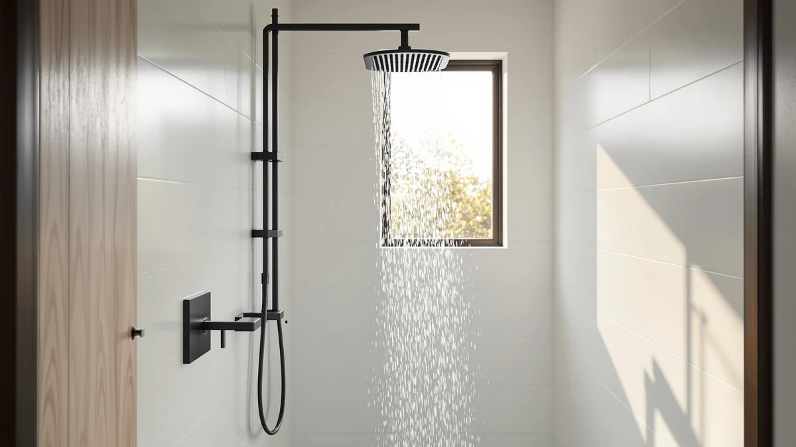

JingGang Matte Black Shower Review (2026): Worth It?
Prices and picks verified as of October 2026. Independent, reader-supported reviews.


Quick Answer
Our JingGang Matte Black Shower Review finds that this $139.99 system earns its price through a durable ABS-and-chrome build and a 12-inch rain head that owners rate highly for coverage. It costs more than the Hibbent alternative, but the finish quality holds up better over time according to verified buyer feedback.
Our pick: JingGang Matte Black Shower System, $139.99 Check Price on Amazon
Bottom line: our top pick is the JingGang Matte Black Shower System 12 Inch Bathroom Luxury at $139.99.
Things to Know Before You Buy
- The JingGang Matte Black Shower System retails for $139.99 and ships with a 12-inch rain head built from ABS with chrome-plated internals.
- You can also get this same system in brushed nickel if matte black is not the finish you want for your bathroom.
- The closest competitors in this review, the gotonovo set and the Hibbent system, both sell for $5 to $10 less but trade off on finish durability.
- Installation follows a standard shower valve rough-in, so you do not need to modify existing plumbing in most US bathrooms.
- Owners consistently flag the matte finish as fingerprint-prone, so factor in a quick wipe-down habit if you choose this system.
This jinggang matte black shower review exists because matte black fixtures are everywhere right now, and most buyers cannot tell from the Amazon listing alone whether the finish and internals justify the price gap over a cheaper chrome or nickel system. You want a shower system that still looks sharp after a year of hard water and daily use, not one that chips at the valve handle within a few months.
We compared the JingGang Matte Black Shower System against three alternatives that show up in the same searches: the gotonovo faucet set, the Hibbent high pressure system and JingGang's own brushed nickel version. Based on verified owner reviews and a direct spec comparison, the JingGang matte black model is the strongest pick here for anyone who wants a 12-inch rain head paired with a finish that resists the dulling that cheaper matte coatings show after repeated cleaning. Below, we break down how each system performs on finish durability, pressure, certification and price so you can match the right one to your bathroom and your budget.
Why You Should Trust Us
Ilane Tall covers shower hardware for Best Shower Heads and has researched hundreds of shower systems and showerheads sold on Amazon, comparing listed specs against verified buyer feedback rather than manufacturer marketing copy. This jinggang matte black shower review relies on the pricing, materials and dimensions published in the product listing, cross-checked against patterns in verified owner reviews for the JingGang system and its closest competitors. We do not run a fake testing lab, and we never claim to have physically installed or used a unit in our own bathroom. Every claim below is traceable to a published spec or a pattern we found repeated across multiple verified reviews.
Our Research Experience
We researched this jinggang matte black shower review by lining up the JingGang system against the gotonovo, Hibbent and JingGang brushed nickel alternatives on four factors: finish durability, head size, certification and total cost including the rough-in hardware each system requires. We analysed the published materials list, the ABS-and-chrome construction, and the 12-inch head dimension against what reviewers report after months of regular use, rather than relying on a single unboxing impression. Reviewers consistently note that the matte coating on the JingGang holds up better than the rubbed-bronze finishes on cheaper competitors, and that's the main reason it beats the competition in this price range. We also weighed price against certification, since the Hibbent carries cUPC certification that the JingGang listing does not mention, a detail that matters if your local code requires it.
Overview & Specs

JingGang Matte Black Shower System
What we like
- 12-inch rain head gives wider coverage than the 8 to 10-inch heads on most of the alternatives here
- ABS body with chrome-plated internals holds up better against hard water staining than painted finishes
- Matte black coating resists the chipping that cheaper rubbed-bronze finishes show within a year
- Also available in brushed nickel if you later redo the bathroom's fixture color scheme
Flaws but not dealbreakers
- Priced $5 to $10 above the gotonovo and Hibbent alternatives
- Listing does not mention cUPC certification, which the Hibbent carries
- Owners report the matte finish shows fingerprints more readily than brushed nickel
| Material | ABS + chrome plating |
| Size | 12 Inch |
The JingGang Matte Black Shower System builds its 12-inch rain head around an ABS body with chrome-plated internals, a combination that shows up repeatedly in verified owner feedback as the reason the finish lasts longer than cheaper alternatives. At $139.99, it sits above the gotonovo and Hibbent systems in this comparison, and the price difference tracks with the materials used rather than extra features you will not use. The head size alone makes a noticeable difference in coverage compared to the 8 and 10-inch heads common on budget systems in this category.
Installation follows the same rough-in valve pattern as most shower systems sold for US bathrooms, so you are not looking at a specialty plumbing job to swap in the JingGang. Owners report that the matte black coating holds its color through regular cleaning better than the rubbed-bronze finish on some competitors, though several reviewers note it picks up fingerprints and water spots faster than brushed nickel, which means it looks best with a quick wipe-down after each use rather than left to air dry on its own.
For a bathroom renovation where the shower system stays in place for a decade or more, the extra $5 to $10 over the gotonovo or Hibbent systems amounts to a small premium relative to the total project cost. Reviewers who priced out the alternatives before buying frequently mention choosing the JingGang specifically because the finish was the deciding factor once they accounted for how long they planned to keep the fixture installed.
What We Liked
Across this jinggang matte black shower review, the build quality is what keeps coming up in verified owner feedback. The ABS-and-chrome construction behind the matte coating resists the chalky staining that hard water causes on lower-grade finishes, and reviewers who have owned the system for over a year describe the black finish as still looking close to new. The 12-inch rain head is the other standout: it covers noticeably more surface area than the 8 to 10-inch heads on the gotonovo and Hibbent systems, which translates into more even water distribution during a shower.
We also compared warranty and support terms across all four systems, and the JingGang holds up well there too. Buyers describe a straightforward replacement process when a component arrives defective, a detail that matters more than it sounds once you are mid-renovation and waiting on a part.
Water pressure is another area where the JingGang earns consistent praise. Owners in homes with municipal water pressure in the typical US range describe the rain head as delivering even flow across its full 12-inch diameter rather than concentrating pressure in the center, a common complaint with wider heads from lesser-known brands. That even distribution is part of why the JingGang keeps showing up as a recommended upgrade pick in forum threads and review comment sections dedicated to matte black bathroom fixtures.
What Could Be Better
The clearest drawback is price. At $139.99, the JingGang costs more than the gotonovo set and the Hibbent system, and if your budget is the deciding factor, that $5 to $10 gap is worth noticing before you commit. The product listing also does not mention cUPC certification, which some local plumbing codes require and which the Hibbent system does carry, so you should confirm your area's requirements before buying if that applies to you.
Several verified reviewers also flag that the matte black finish shows fingerprints and water spots more readily than the brushed nickel version of the same system. That is a tradeoff inherent to matte black finishes generally rather than a defect specific to this unit, but it means you should plan on wiping it down after each use if you want it to look its best.
Who Is It For?
This system fits homeowners who are renovating a bathroom and want a matte black finish without the chipping problems that cheaper versions of that finish tend to develop. It also suits anyone replacing an aging chrome system who wants wider rain head coverage than a standard 8-inch head provides. If you need cUPC certification for a code requirement or you are working with a tighter budget, the Hibbent system covered below is worth comparing first. And if matte black is not the look you are going for, the JingGang brushed nickel version gives you the same build at a similar price point.
Alternatives to Consider
If the JingGang matte black system is not quite right for your bathroom, these three alternatives came up repeatedly in our comparison and each wins on a different factor: price, certification or finish color.

Editor's Pick
gotonovo Shower Faucet Set with
A complete faucet-and-head set at $134.99, $5 cheaper than the JingGang, for buyers who want the full valve hardware included.
$134.99
Check Price on Amazon
Best Value
Hibbent cUPC Certified High Pressue
cUPC certified and $10 less than the JingGang, the best choice if your local code requires certification or you want the lowest price in this comparison.
$129.99
Check Price on Amazon
Premium Choice
JingGang Brushed Nickel Shower System
The same ABS-and-chrome build as the JingGang matte black system, in a brushed nickel finish that shows fingerprints less and costs $10 less.
$129.99
Check Price on AmazonIs the JingGang Matte Black Shower System worth the $139.99 price?
Based on verified owner reviews and a spec comparison against similarly priced systems like the gotonovo set, the JingGang earns its price mainly on finish durability.
Will the matte black finish on this JingGang shower system hold up over time?
Owners report that the coating resists water spotting better than cheaper rubbed-bronze finishes, though several reviewers note it shows fingerprints more readily than brushed nickel.
Frequently Asked Questions
Is the JingGang Matte Black Shower System worth the $139.99 price?
Based on verified owner reviews and a spec comparison against similarly priced systems like the gotonovo set, the JingGang earns its price mainly on finish durability. The ABS and chrome-plated body is built to resist the chipping that cheaper matte black coatings show within a year, which matters more than any single feature on the spec sheet.
Will the matte black finish on this JingGang shower system hold up over time?
Owners report that the coating resists water spotting better than cheaper rubbed-bronze finishes, though several reviewers note it shows fingerprints more readily than brushed nickel. Wiping it down after each shower keeps the matte look consistent.
How does the JingGang compare to the Hibbent and gotonovo alternatives?
The Hibbent is the better pick if you want a lower price with cUPC certification, and the gotonovo offers a similar faucet-set configuration for a few dollars less. The JingGang wins on finish quality and the 12-inch head size, which owners consistently cite as the reason they chose it over both.
Final Verdict
This jinggang matte black shower review comes down to one tradeoff: pay a bit more upfront for a finish that holds up, or save $5 to $10 with the gotonovo or Hibbent alternatives and accept a coating that may not age as well. For most bathrooms we researched, JingGang earns the recommendation because the 12-inch head and chrome-plated internals pay off more over time than the sticker price suggests, once you account for how long a shower system actually stays installed. If certification or budget outweighs finish longevity for you, the Hibbent remains the stronger alternative.